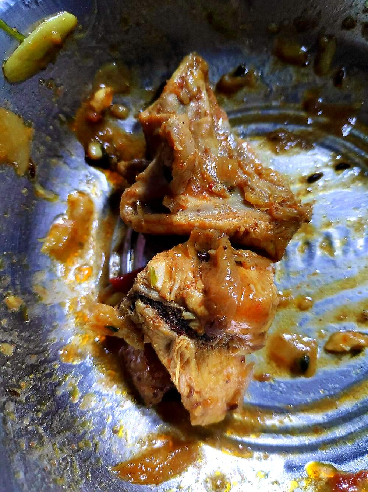

Allergens: none of the ten listed below
Ingredients
Quantities for 4.
- 800g, bone-in, cut into curry pieces Chickenbone-in matters for the saaru
- 2 large, 1 sliced and 1 finely chopped Onion
- 2 medium, chopped Tomato
- 3/4 cup, freshly grated Coconut
- 1 tbsp Poppy Seeds
- 8 byadgi Dried Red Chilli
- 1 tsp, whole Black Pepper
- 1 tbsp Coriander Powder
- 1 tsp Cumin Seeds
- 2cm piece Cinnamon
- 4 Cloves
- 10 cloves Garlic
- 3cm piece Ginger
- 3/4 tsp Turmeric
- 15 Curry Leaves
- 4 tbsp Coconut Oil
- 1/4 cup, chopped Coriander Leavesoptional
- 1/2, juiced Lemonto finishoptional
- to taste Salt
- 2 cups Water
Cookware
stovetop, kadhai, blender
Checked against the ingredient list for ten allergens: milk, egg, fish, crustaceans, tree nuts, peanuts, sesame, mustard, soy and gluten. Brands vary, so read the label on anything new to you.
Before you start
- Rub the chicken with 1/2 tsp turmeric and 1 tsp salt then cover and refrigerate it 30 minutes while you make the masala.
- Roast and grind the coconut masala before you start cooking. It cannot be rushed once the chicken is in the pan.
- Use fresh coconut if you can. Desiccated gives a thinner, sweeter gravy.
Method
- Heat 1 tbsp of the coconut oil and fry the sliced onion 6 minutes until browned at the edges. Set aside.
- In the same pan roast the red chillies, black pepper, cumin, cinnamon and cloves 1 minute until they smell sharp, then add the poppy seeds for 30 seconds.
- Add the grated coconut and roast 4 minutes over medium-low, stirring constantly, until it turns an even golden brown and smells toasted.Constant stirring, medium-low heat. Coconut scorches in patches and one burnt patch makes the whole saaru bitter.
- Cool, then grind the roasted spices, coconut, browned onion, garlic, ginger and coriander powder with 3/4 cup water to a very smooth dark paste.
- Heat the remaining 3 tbsp coconut oil in a kadhai, add the curry leaves and the chopped onion and fry 8 minutes until soft and deep gold.
- Add the tomato and remaining turmeric and cook 5 minutes until the tomato collapses and oil beads at the edges.
- Add the chicken and fry on high 6 minutes, turning the pieces, until they are opaque all over and lightly seared.Sear in two batches if the pan is crowded. Chicken that stews instead of searing makes a flat saaru.
- Stir in the ground masala and cook 6 minutes on medium, scraping the base, until it darkens by a shade and the oil separates.
- Pour in 1 1/4 cups hot water and salt to taste, bring to a boil, then cover and simmer 20 minutes on low until the chicken is falling off the bone and the gravy is the thickness of pouring cream.
- Finish with the lemon juice and coriander leaves, rest 10 minutes off the heat and serve with ragi mudde or akki rotti.The rest lets the gravy thicken and the pepper come forward.
Safe temperatures: Chicken and duck are done at 74°C / 165°F, taken at the thickest part and clear of the bone. Reheat leftovers to 74°C / 165°F. FoodSafety.gov
Storage
Keeps 3 days refrigerated and improves overnight. Reheat gently on the stovetop with a splash of water; do not boil hard or the coconut gravy will split.
Nutrition Medium estimate
High protein: 46 g a serving, 38% of the calories
| Per serving471 g | Per 100 g | |
|---|---|---|
| Calories | 490 kcal | 104 kcal |
| Protein | 46.1 g | 10 g |
| Carbohydrate | 17.3 g | 4 g |
| of which sugars | 6.0 g | 1 g |
| Fibre | 5.1 g | 1 g |
| Fat | 26.4 g | 6 g |
| of which saturated | 17.5 g | 4 g |
| of which unsaturated | 6.0 g | 1 g |
Ingredients given to taste count as zero, so the real figures run a little higher. Nearest database match used for curry leaves. Estimated from raw ingredients using USDA FoodData Central.
More like this: Gluten-free Indian recipes · Dairy-free Indian recipes · Karnataka recipes
Times, yields, allergens and nutrition are guidance. Use your own judgement on doneness and on storing. More in About.